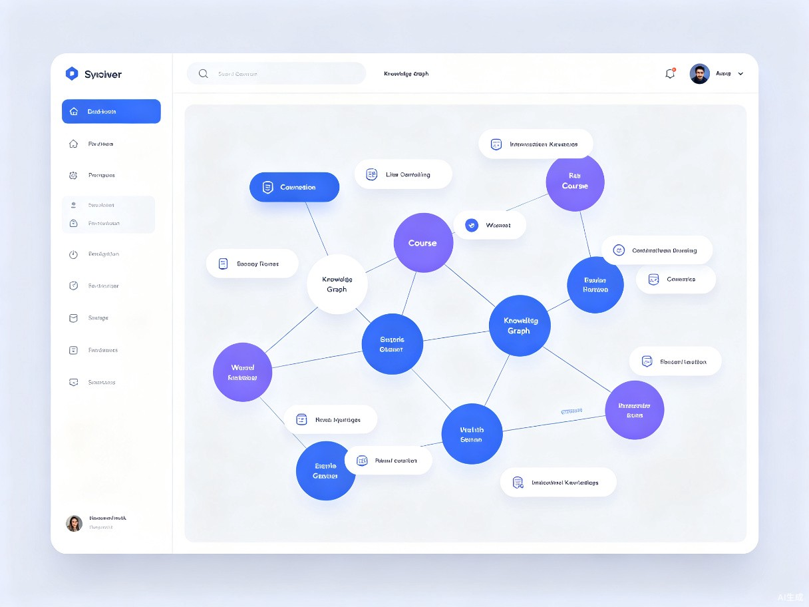

创意介绍
课脉是一个基于知识图谱技术的Web端学习系统。它解决的核心问题是：大学生学完一门课后，知识点散落在教材、课件和笔记中，难以形成体系化的认知结构，复习时不知道重点之间的逻辑关系。
"我在期末复习时发现，很多同学把整本书翻来覆去背了好几遍，但问到'这个概念和另一个概念有什么联系'时却答不上来。"
老师常说"要把书读薄"，但没有人告诉我们怎么把书读薄。如果有一个工具能把课程知识点自动串联成图谱，复习效率会高很多。
解决什么问题
知识点散落各处，缺乏体系化认知，复习时难以把握概念间的逻辑关系。
灵感来源
期末复习的真实痛点——背书背了很多遍，却无法回答概念之间的关联。
产品形态
Web端学习系统，支持上传课件/教材PDF后自动生成课程知识图谱。
目标用户及痛点
面向用户
在校大学生，尤其是理工科、医学等课程知识点密集、逻辑性强的专业学生。
理工科学生
医学专业
计算机科学
经济管理
使用场景
- 期末复习阶段 — 需要系统梳理课程知识体系，快速建立全局认知
- 课前预习 — 想快速了解章节间的逻辑关系，明确学习路径
- 课程项目 / 论文写作 — 需要快速定位相关知识，理解概念间的关联
当前痛点
目前学生主要靠手画思维导图或依赖老师的复习提纲，但手画耗时且容易遗漏知识点之间的关联，而老师的提纲往往比较笼统，无法覆盖个性化学习需求。
价值与意义
🎯 效率提升
将学生手动整理知识体系的时间从数小时缩短到几分钟，让复习从"盲目背诵"升级为"结构化理解"，真正提升学习效率。
💼 商业价值
可面向高校提供定制化版本，也可作为C端付费学习工具，与教材出版社、在线教育平台合作，形成可持续的商业模式。
数小时 → 几分钟
知识体系整理时间
结构化理解
复习方式升级
B2B + B2C
双轨商业模式
产品概念展示
课脉的核心能力是将教材、课件中的知识点自动抽取并构建为可视化的知识图谱，帮助学生建立体系化认知。

知识图谱示例
以下以"数据结构"课程为例，展示系统自动生成的知识图谱结构：
graph TB
A[数据结构] --> B[线性结构]
A --> C[树形结构]
A --> D[图结构]
A --> E[查找与排序]
B --> B1[数组]
B --> B2[链表]
B --> B3[栈]
B --> B4[队列]
C --> C1[二叉树]
C --> C2[堆]
C --> C3[平衡树]
C1 --> C1a[遍历算法]
C1 --> C1b[搜索算法]
D --> D1[邻接矩阵]
D --> D2[邻接表]
D --> D3[最短路径]
D --> D4[最小生成树]
E --> E1[二分查找]
E --> E2[哈希查找]
E --> E3[快速排序]
E --> E4[归并排序]
B2 -.-> C1
C1 -.-> D
E1 -.-> B1
通过知识图谱，学生可以直观地看到：每个知识点在整体课程中的位置、与其他概念的前后依赖关系、以及复习时应该遵循的最佳路径。
让知识脉络清晰可见
课脉致力于用技术重塑大学生的学习方式，从"背知识点"到"理解知识网络"，让每一次复习都更有价值。